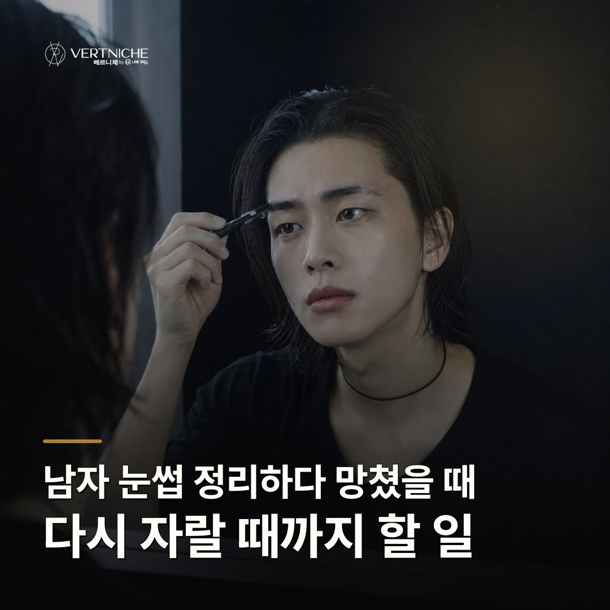

Care notes ·
남자 눈썹 정리하다 망쳤을 때, 다시 자랄 때까지 할 일

- 망친 직후엔 멀쩡한 쪽까지 건드리지 말고 손을 떼야 복구가 빠르다
- 밀린 잔털은 보통 2주 안에 다시 자라니 조급해하지 않아도 된다
- 자라는 동안엔 밖으로 벗어난 털만 조금씩, 라인 안쪽은 그대로 둔다
셀프로 눈썹을 밀거나 틀어놨을 때, 다시 자랄 때까지 뭘 하고 뭘 참아야 하는지 순서대로 정리했습니다.
망친 직후엔 더 손대지 않는 게 먼저예요
망친 직후 가장 먼저 할 일은, 아무것도 더 하지 않는 거예요. 한쪽을 실수하면 반대쪽도 맞추고 싶어지는데, 그러면 멀쩡하던 쪽까지 다시 자라길 기다려야 해요.
밀린 자리는 보통 2주 안에 다시 올라와요
밀린 자리는 보통 2주 안에 다시 올라오기 시작해요. 상담하면서도 자주 말씀드리는데, 눈썹 잔털은 레이저 제모가 아니라 밀어낸 것뿐이라 계속 자라요.
기다리는 동안 칼은 벗어난 털에만 대요
기다리는 동안 눈썹칼은 '밖으로 확실히 벗어난 털'만 대세요. 다시 자라는 시기엔 잔털이 지저분하게 올라와서 또 밀고 싶어지거든요.
반복해서 망친다면 문신으로 틀을 잡는 방법도 있어요
반복해서 망치는 눈썹이라면 문신으로 틀을 잡는 게 답일 수 있어요. 혼자 정리하고 또 정리하는 걸 반복하면 솔직히 많이 힘들거든요.
상담 때 확인할 것
- 밀린 범위 — 라인 안쪽까지 밀었는지, 밖 잔털만 밀었는지
- 미간 거리 — 안쪽을 건드려 눈썹 사이가 벌어졌는지
- 숱 분포 — 꼬리·중간 중 어디가 비었는지
- 경과 시간 — 마지막으로 민 뒤 며칠 지났는지
자주 묻는 질문
밀어버린 눈썹, 다시 자라는 데 얼마나 걸리나요?
칼로 민 잔털은 보통 2주 안에 다시 올라오기 시작해요. 다만 꼬리처럼 원래 털이 없던 자리는 기다려도 채워지지 않을 수 있어요. 그런 자리는 그리거나 문신으로 틀을 잡아야 해요.
다시 자랄 때까지 눈썹칼로 정리해도 되나요?
밖으로 확실히 벗어난 털만 조금씩 정리하는 건 괜찮아요. 라인 안쪽이나 미간은 건드리지 마세요. 복구 중엔 덜 미는 쪽이 항상 안전합니다.
자꾸 셀프 정리하다 망치는데, 문신하면 나아지나요?
틀이 생기면 그 안팎만 정리하면 돼서 혼자 관리하기가 훨씬 편해져요. 많이 밀어둔 상태여도 틀을 먼저 잡고 그 안으로 눈썹을 길러 덮을 수 있어요. 어디까지 자랄지 봐야 할 때는 조금 길러서 한 번 더 보고 정해요.
요약입니다. 사례와 사진이 있는 전체 글은 네이버 블로그에서 볼 수 있습니다.